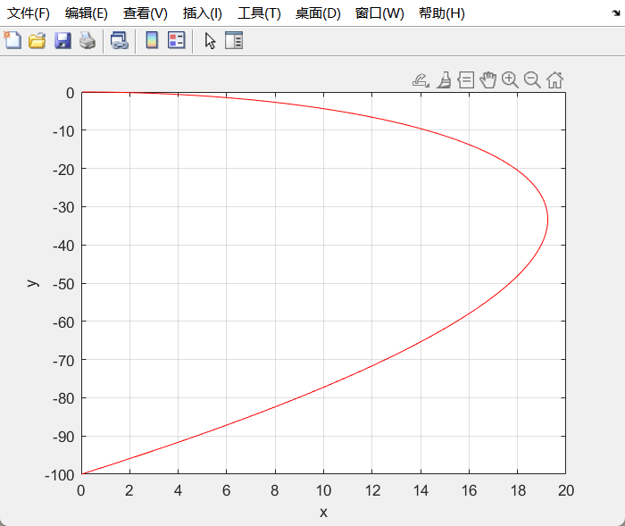
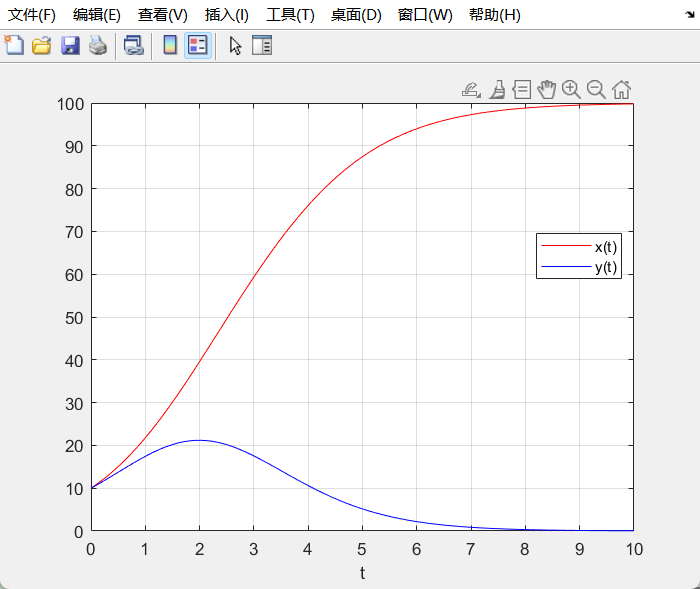

第四次作业
4.6.6
(1)建立如图所示坐标系，小船记为点C，

则有
由极坐标换元
和链式求导法则可得
将两个方程相除，消去 ：
解方程得到
将 回代并加上初值条件
(2)
解析解:

数值解：
二者均得到 小船抵达对岸
code:
ts = 0:1:67;
x0 = [0, -100];
theta = linspace(-pi/2, 0, 1000);
r = 100 .* ( abs ( csc (theta) - cot (theta)) .^ 2) ./ abs (sin(theta));
x1 = r .* cos(theta);
y1 = r .* sin(theta);
[t,x] = ode45(@func, ts, x0);
[t,x]
figure(1);
plot(t, x(:,1), "b-", t, x(:,2), "r-");
grid on;
xlim([0,67]);
xlabel("t");
legend("x(t)", "y(t)","location", "best");
figure(2);
plot(x(:,1), x(:,2), "b-");
grid on;
xlabel("x");
ylabel("y");
ylim([-100,0]);
figure(3);
plot(x1, y1, "r-");
grid on;
xlabel("x");
ylabel("y");
function dx = func(t, x)
v1 = 1; v2 = 2;
r = sqrt(x(1).^2 + x(2).^2);
dx = [v1 - v2 .* x(1) ./ r; - v2 .* x(2) ./ r];
end
(3)
为退化情况，直线运动
剩下三种情况图像依次如下，且到达时间在增加。且第三种情况无法到达
4.6.9
(1)最中x（t）趋于稳定值，y（t）趋于0，即近乎灭亡
x，y 随t变化曲线
相图
code:
x0 = [10, 10];
ts = linspace(0, 10, 100);
[t, x] = ode45(@competifunc, ts, x0);
[t, x]
figure(1);
plot(ts, x(:, 1), 'r-',ts,x(:, 2), "b-");
grid on;
xlabel("t");
legend("x(t)", "y(t)", "location", "best");
figure(2);
plot(x(:, 1),x(:, 2),"b-");
xlabel("x");
ylabel("y");
grid on;
function dx = competifunc(t, x)
r1= 1; r2 = 1;
n1 = 100; n2 = 100;
s1 = 0.5; s2 = 2;
dx = [r1.* x(1) .* (1 - x(1)./n1 - s1.* x(2)./n2); r2.* x(2) .* (1 - x(2)./n2 - s2.* x(1)./n1)];
end
syms t;
q = 2/pi * int(1/sqrt(1-t^4), t, 0, 1)
qq = 1/double(q)
n = 10;
a = zeros(1,n);
b = zeros(1,n);
q = qq + zeros(1,n)
a(1) = 1;
b(1) = sqrt(2);
for i = 1:n-1
a(i+1) = (a(i)+b(i))/2;
b(i+1) = sqrt(a(i)*b(i));
end
plot(1:n,a)
hold on
plot(1:n,b)
hold on
plot(1:n,q)
saveas(gcf, '1.4.3.png');
（2）前半问：只调整除了s以外的参数，图像前期趋势略有升降，但最终稳定情况与第一小问相同
后半问：
由图像可知，反倒是x（t）趋于0，y（t）趋于一个正的稳定值。
于是可以得出结论：S1,S2是影响种群竞争模型中，两种群长期稳定形态的决定性因素。
（3）s₁ = 0.8, s₂ = 0.7 时，两种群各自稳定于某一值，s₁ = 1.5, s₂ = 1.7 时，种群甲稳定于其最大容量，而种群乙走向灭亡。
故 s₁, s₂ < 1 时，两个种群都能达成生态意义下的长期平衡，而 s₂ 相对较小，因此乙种群面临的资源竞争相对更弱，平衡生态量更高。
当某一 sᵢ > 1 而另一者小于 1 时，会出现一个稳定存活，一个灭亡
当 s₁, s₂ > 1 时，大的一方存活，弱的灭亡